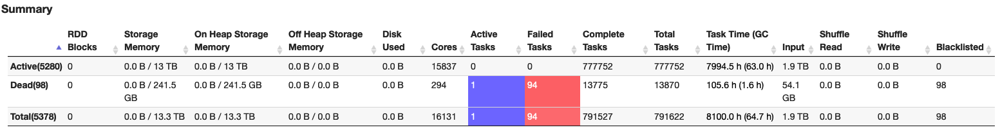

5.2 - Spark troubleshooting and performance tuning¶
5.2.1 - Spark Structured Streaming applications have high Connection Create Rate to Amazon MSK¶
Symptom: Amazon MSK cluster has high CPU usage and MSK metrics indicate high connection create rate to the cluster.
Analysis: By default, Spark Structured Streaming Kafka connector has a 1:1 mapping relation of MSK TopicPartitions to Spark tasks. Between micro batches, Spark tries to (best effort) assign the same MSK TopicPartitions to the same executors which in turn reuses the Kafka consumers and connections.
Spark Structured Streaming Kafka connector has an option minPartitions which can divide large TopicPartitions to smaller pieces. When minPartitions is set to a value larger than the number of TopicPartitions, Spark creates tasks based on minPartitions to increase parallelism (the number of Spark tasks will be approximately minPartition).
- As 1:1 mapping doesn't exist anymore, Spark executors are randomly assigned to process any TopicPartition OffsetRanges. An executor processed TopicPartition X can be assigned to process TopicPartition Y in next micro batch. A new Kafka consumer/connection needs to be created if Y is on another MSK broker.
- One Spark executor can be assigned to process multiple Spark tasks with the same MSK TopicPartition on different OffsetRanges. And in Spark 2.x, Kafka consumer cache is disabled when multiple tasks in the same executor read the same TopicPartitions .
Setting minPartitions comes at a cost of initializing Kakfa consumers at each micro batch. This may impact performance especially when using SSL.
A test was run with following test environment:
Kafka version 2.8.1
- 3 kafka.m5.xlarge instances
- test kafka topic has 10 partitions
- only SASL/SCRAM authentication enabled
EMR 5.36 (Spark 2.4.8) cluster
- 30 core nodes - EC2 m5.4xlarge
Spark Structured Streaming test application has 5 cores 5G memory for each executor.
Below figure shows the test result of different minPartitions values with MSK’s ConnectionCreationRate and CPUUser usages. As shown in the test result, higher ConnectionCreationRate is related to higher CPU usage.
Test1: 50 minPartitions 16:40-17:30
Test2: 100 minPartitions 18:00-18:35
Test3: 200 minPartitions 19:00-19:35
Test4: no minPartitions 20:06 - 20:30
Recommendation:
-
Upgrade to the latest EMR version (spark 3.x) to use Sparks consumer pool cache feature. This feature allows Spark to cache more than one Kafka consumer with same MSK TopicPartition at each executor, and reuse the consumers in later micro batches. This will allow you to set
minPartitionswhile reduce the ConnectionCreationRate. -
On EMR 5.x (Spark 2.x), only set min partitions when needed - for example, if you have data skew or if your stream is falling behind. Min partitions will allow you to increase parallelism and process records faster but at the expense of high connection rates and CPU.
5.2.2 - spark.driver.maxResultSize error on an EMR heterogeneous cluster but the driver is not collecting data¶
Symptom: Spark jobs fail from time to time and below error is seen in the log:
22/08/22 14:14:24 ERROR FileFormatWriter: Aborting job f6913a46-d2d8-46f0-a545-2d2ba938b113. org.apache.spark.SparkException: Job aborted due to stage failure: Total size of serialized results of 179502 tasks (1024.0 MB) is bigger than spark.driver.maxResultSize (1024.0 MB) at org.apache.spark.scheduler.DAGScheduler.org$apache$spark$scheduler$DAGScheduler$$failJobAndIndependentStages(DAGScheduler.scala:2171)
By setting spark.driver.maxResultSize to 0(unlimited), the error is gone. But the Spark job is not collecting data to driver, how can the result returning to driver exceed 1024MB?
Analysis: Each finished task sends a serialized WriteTaskResult object to driver. The object size is usually several kilobytes, e.g.
22/09/06 22:24:18 INFO Executor: Finished task 0.0 in stage 3.0 (TID 3). 5192 bytes result sent to driver
From the log, we can see there are 179502 (or more) tasks. For such a number of tasks, the total result size can exceed 1024MB for serialized WriteTaskResult objects only.
The job is reading parquet files from S3 and the input folder has 3.5K parquet files with average size ~116MB per file. As default spark.sql.files.maxPartitionBytes is 128M, so approximately one file to one Spark task. The job's processing logic further splits one task to ~11 tasks. Total tasks should be 3.5K * 11 = 38.5K. But why there are 179502 (or more) tasks?
To find root cause, we need to understand how Spark SQL decides the max size of a partition for non-bucketed splittable files.
Spark2 is following below formula (Spark3 has a slightly different formula which is described later)
maxSplitBytes = Math.min(defaultMaxSplitBytes, Math.max(openCostInBytes, bytesPerCore))
maxSplitBytes is the max bytes per partition.
defaultMaxSplitBytes is from spark.sql.files.maxPartitionBytes whose default value is 128M.
openCostInBytes is from spark.sql.files.openCostInBytes whose default value is 4M.
bytesPerCore = (Sum of all data file size + num of file * openCostInBytes ) / defaultParallelism
defaultParallelism’s default value is total number of virtual cores running the job. It can also be set to a value by defining spark.default.parallelism.
When there are a large number of virtual cores allocated to the Spark job by Yarn, maxSplitBytes can be smaller than defaultMaxSplitBytes, i.e. more tasks will be created. For this case, from Spark UI, we know total number of vcores is 15837, i.e. defaultParallelism is 15837

bytesPerCore = (116M * 3500 + 4M * 3500)/15837 = 26.5M
maxSplitBytes = min(128M, max(4M, 26.5M)) = 26.5M. So one 116M parquet file is split into 4~5 Spark tasks. 3.5K * 11 * 5 = 192.5K -- that's why there were 179502 (or more) tasks.
Note that the vcore count is based on Yarn containers, not physical cores. As Yarn’s default container allocation is based on available memory, this means there can be vcore over subscriptions in a heterogeneous EMR cluster.
For example, if we have a heterogeneous EMR cluster as below:
Core Node: c5.12xlarge(48cores/96GB) — Memory allocated to Yarn: 90112MB
Task Node: r5.8xlarge(32cores/256GB) — Memory allocated to Yarn: 253952MB
The default EMR executor size is based on core node instance type. In this example, for c5.12xlarge, default executor size is 3 cores 4743M memory. Default spark.yarn.executor.memoryOverheadFactor is 0.1875. A Yarn container has 3 cores, 4743MB*(1+0.1875)= 5632MB memory.
On c5.12xlarge, Yarn can allocate 16 conatainers with 48 vcores in total:
90112MB/5632MB = 16 containers * 3 core = 48 vcores
While on r5.8xlarge, Yarn can allocate 45 containers with 135 vcores in total:
253952MB/5632MB = 45 containers * 3 core = 135 vcores - 32cores = 103 vcore oversubscription
Recommendation: When Spark reads splittable files, maxSplitBytes can be smaller than spark.sql.files.maxPartitionBytes if there are a big number of vcores allocated to the job. Use the formula described here to set spark.default.parallelism value properly and have a reasonable maxSplitBytes.
Spark 3
Spark 3 provides more options to controlmaxSplitBytes as below
def maxSplitBytes(
sparkSession: SparkSession,
selectedPartitions: Seq[PartitionDirectory]): Long = {
val defaultMaxSplitBytes = sparkSession.sessionState.conf.filesMaxPartitionBytes
val openCostInBytes = sparkSession.sessionState.conf.filesOpenCostInBytes
val minPartitionNum = sparkSession.sessionState.conf.filesMinPartitionNum
.getOrElse(sparkSession.leafNodeDefaultParallelism)
val totalBytes = selectedPartitions.flatMap(_.files.map(_.getLen + openCostInBytes)).sum
val bytesPerCore = totalBytes / minPartitionNum
Math.min(defaultMaxSplitBytes, Math.max(openCostInBytes, bytesPerCore))
}
filesMinPartitionNum is from spark.sql.files.minPartitionNum. It is the suggested (not guaranteed) minimum number of split file partitions. If not set, the default value is spark.default.parallelism.
leafNodeDefaultParallelism is from spark.sql.leafNodeDefaultParallelism. It is the default parallelism of Spark SQL leaf nodes.
Setting either of the above two parameters has the same effect as spark.default.parallelism on maxSplitBytes.